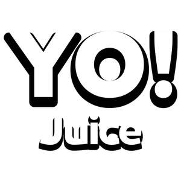

Trade Mark Journal No.2025/051 19 December 2025
UK00004306631 7 December 2025 (29,30,32)

- Class 29
- Milk drinks; Flavoured milk drinks; Yogurt drinks; Yoghurt drinks; Drinking yoghurt; Milk beverages; Drinking yogurts.
- Class 30
- Coffee drinks; Chocolate drink preparations; Cocoa drinks; Coffee beverages with milk; Coffee beverages; Drinking chocolate; Tea beverages with milk; Drinks prepared from chocolate; Drinks flavoured with chocolate; Tea beverages; Flavourings of tea for food or beverages; Drinks prepared from cocoa; Chocolate drink preparations flavoured with mocha; Chocolate drink preparations flavoured with banana; Tea-based beverages; Beverages (Tea-based -); Coffee-based beverages; Beverages (Coffee-based -); Coffee-based beverage containing milk; Cocoa beverages; Chocolate beverages; Tea-based beverages with fruit flavoring; Chocolate-based beverages; Beverages (Chocolate-based -); Carbonated and non-carbonated tea based beverages; Flavorings for beverages; Cocoa-based beverages; Beverages (Cocoa-based -); Beverages with coffee base; Beverages with a coffee base; Prepared coffee and coffee-based beverages; Beverages with tea base; Beverages with a tea base; Prepared coffee beverages; Chocolate-based beverages with milk; Ice beverages with a coffee base.
- Class 32
- Non-alcoholic drinks; Cola drinks; Juice drinks; Carbonated non-alcoholic drinks; Non-alcoholic malt drinks; Isotonic non-alcoholic drinks; Non-alcoholic fruit drinks; Non-alcoholic vegetable juice drinks; Non-alcoholic beer flavored beverages; Sarsaparilla [non-alcoholic beverage]; Isotonic drinks; Non-alcoholic beverages flavoured with coffee; Non-alcoholic soda beverages flavoured with tea; Non-alcoholic beverages flavored with coffee; Non-alcoholic sparkling fruit juice drinks; Guarana drinks; Kvass [non-alcoholic beverage]; Non-alcoholic beer; Non-alcoholic beverages with tea flavor; Fruit drinks; Non-alcoholic beverages flavored with tea; Non-alcoholic beverages flavoured with tea; Drinking water; Bottled drinking water; Kvass [non-alcoholic beverages]; Non-alcoholic carbonated beverages; Root beers, non-alcoholic beverages; Non-alcoholic beverages; Beverages (Non-alcoholic -); Carbohydrate drinks; Fruit juice drinks; Non-alcoholic grape juice beverages; Fruit juice beverages (Non-alcoholic -); Non-alcoholic fruit juice beverages; Drinking water with vitamins; Soft drinks flavored with tea; Apple juice drinks; Cocktails, non-alcoholic; Non-alcoholic cocktails; Fruit flavored drinks; Energy drinks; Non-alcoholic malt beverages; Orange juice drinks; Fruit flavoured carbonated drinks; Sports drinks; Cordials (non-alcoholic beverages); Smoothies [non-alcoholic fruit beverages]; Vegetable drinks; Non-alcoholic flavored carbonated beverages; Non-alcoholic fruit vinegar beverages; Fruit beverages (non-alcoholic); Non-alcoholic fruit cocktails; Fruit flavoured drinks; Non-carbonated soft drinks; Coconut water as a beverage; Coconut water as beverage; Colas [soft drinks]; Fruit-based soft drinks flavored with tea; Soy beverage; Fruit-flavored beverages; Non-alcoholic honey-based beverages; Honey-based beverages (Non-alcoholic -); Fruit-based beverages; Vegetable juices [beverage]; Isotonic beverages; Fruit-flavoured beverages; Sherbet beverages; Coconut-based beverages; Fruit beverages; Syrups for beverages; Whey beverages; Beverages (Whey -); Tomato juice [beverage]; Non-alcoholic malt free beverages [other than for medical use]; Squashes [non-alcoholic beverages]; Non-alcoholic syrups for making beverages; Syrups for making non-alcoholic beverages; Iced fruit beverages.
Proprotein Ltd